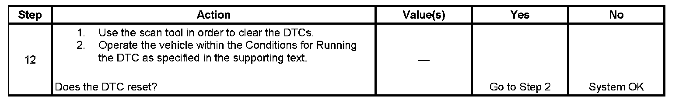

B0168
DTC B0158, B0163, B0168, B0173, B0178, B0509, B0514, B3578 or B3583
CIRCUIT DESCRIPTION
Air temperature sensors allow the HVAC control module to monitor the temperature of the discharge air in the HVAC ducts. The module applies 5 volts to internal input resistors that are connected to the signal circuits of the air temperature sensors. The module provides ground to the air temperature sensors through the low reference circuit. The HVAC control module monitors the voltage drops across the air temperature sensors and uses the inputs for automatic control calculations. When the duct air temperatures are cold, the resistances of the sensors are high and the voltage signals are high. When the duct air temperatures are hot, the resistances of the sensors are low and the voltage signals are low. The HVAC control module converts the voltage values to count values where 1 volt is approximately equal to 51 counts.
- DTC B0158 is for the Outside Air Temperature Sensor
- DTC B0163 is for the Passenger Compartment Air Temperature Sensor
- DTC B0168 is for the Passenger Compartment Air Temperature Sensor Auxiliary
- DTC B0173 is for the Left Upper Air Temperature Sensor
- DTC B0178 is for the Left Lower Air Temperature Sensor
- DTC B0509 is for the Right Upper Air Temperature Sensor
- DTC B0514 is for the Right Lower Air Temperature Sensor
- DTC B3578 is for the Auxiliary Upper Air Temperature Sensor
- DTC B3583 is for the Auxiliary Lower Air Temperature Sensor
DTC DESCRIPTORS
DTC B0158 05
Outside Air Temperature Sensor Circuit Short to Battery or Open
DTC B0158 02
Outside Air Temperature Sensor Circuit Short to Ground
DTC B0163 05
Passenger Compartment Temp Sensor 1 Circuit Short to Battery or Open
DTC B0163 02
Passenger Compartment Temp Sensor 1 Circuit Short to Ground
DTC B0168 05
Passenger Compartment Temp Sensor 2 Circuit Short to Battery or Open
DTC B0168 02
Passenger Compartment Temp Sensor 2 Circuit Short to Ground
DTC B0173 05
Output Air Temperature Sensor 1 Circuit Short to Battery or Open
DTC B0173 02
Output Air Temperature Sensor 1 Circuit Short to Ground
DTC B0178 05
Output Air Temperature Sensor 2 Circuit Short to Battery or Open
DTC B0178 02
Output Air Temperature Sensor 2 Circuit Short to Ground
DTC B0509 05
Output Air Temperature Sensor 3 Circuit Short to Battery or Open
DTC B0509 02
Output Air Temperature Sensor 3 Circuit Short to Ground
DTC B0514 05
Output Air Temperature Sensor 4 Circuit Short to Battery or Open
DTC B0514 02
Output Air Temperature Sensor 4 Circuit Short to Ground
DTC B3578 05
Output Air Temperature Sensor 6 Circuit Short to Battery or Open
DTC B3578 02
Output Air Temperature Sensor 6 Circuit Short to Ground
DTC B3583 05
Output Air Temperature Sensor 7 Circuit Short to Battery or Open
DTC B3583 02
Output Air Temperature Sensor 7 Circuit Short to Ground
CONDITIONS FOR RUNNING THE DTC
- Battery voltage is within 8.7-16.5 volts.
- The ignition is ON.
CONDITIONS FOR SETTING THE DTC
The HVAC control module determines that the value of the air temperature parameter is less than 5 counts or greater than 250 counts.
ACTION TAKEN WHEN THE DTC SETS
The HVAC control module uses a default air temperature value for further automatic control calculations. The default values are not displayed on the scan tool.
CONDITIONS FOR CLEARING THE DTC
- The DTC will become history if the HVAC control module no longer detects a fault.
- The history DTC will clear after 100 fault-free ignition cycles.
- The DTC can be cleared with a scan tool.
TEST DESCRIPTION
Step 1 - Step 11:
Step 12:

The numbers below refer to the step numbers on the diagnostic table.
2. This step verifies that the temperature displayed is not within the calibrated range.
3. This step tests for the proper operation of the circuit in the high voltage range.
4. This step tests for the proper operation of the circuit in the low voltage range. If the fuse in the jumper opens when you perform this test, the signal circuit is shorted to voltage.